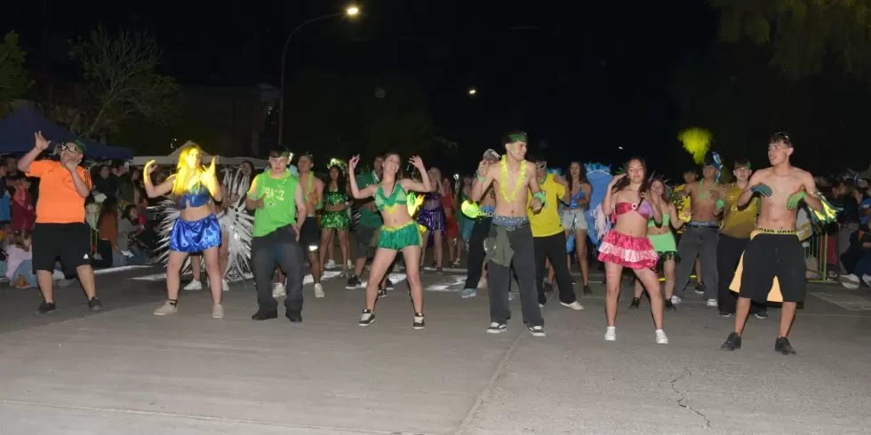

Farándula estudiantil

La Farándula Central de Lavalle se festeja para honrar a las juventudes y los estudiantes, los verdaderos protagonistas de la primavera, y para mantener viva una tradición de carros creativos, cultura e identidad comunitaria en la plaza departamental de Villa Tulumaya, departamento de Lavalle, Mendoza
La Farándula Estudiantil de Lavalle es una de las celebraciones juveniles, culturales y recreativas más importantes del departamento. Se realiza tradicionalmente durante el mes de septiembre, en el marco del Mes de la Juventud, la llegada de la primavera y el Día del Estudiante. Este evento reúne a estudiantes de diferentes instituciones educativas, familias, organizaciones sociales y vecinos, quienes participan de desfiles llenos de música, creatividad, colores y alegría.
Origen y tradición
La Farándula se ha convertido con el paso de los años en una tradición muy esperada por la comunidad lavallina. Su propósito es generar espacios de participación para los jóvenes, promover la integración entre las escuelas y fortalecer los vínculos comunitarios. Además, permite que estudiantes y grupos de distintos distritos compartan sus ideas, talentos y producciones artísticas.
Actividades y atractivos principales
Durante las jornadas se desarrollan diferentes propuestas, entre las que se destacan:
Desfile de comparsas: estudiantes y grupos comunitarios presentan coreografías, vestimentas, disfraces y representaciones creativas.
Kioscos temáticos: las instituciones educativas preparan puestos decorados con diferentes temáticas y ofrecen comidas y bebidas para recaudar fondos destinados a viajes, proyectos y festejos escolares.
Presentación de promociones: los estudiantes que están por finalizar sus estudios secundarios presentan sus nombres, vestimentas y coreografías.
Elección de embajadores estudiantiles: se eligen representantes de la juventud lavallina para participar en actividades culturales y comunitarias.
Espectáculos artísticos: se presentan bandas musicales, DJ, ballets y grupos de danza que acompañan los festejos.
Las actividades se realizan en diferentes distritos, como Tres de Mayo, Costa de Araujo y Villa Tulumaya, permitiendo que más comunidades puedan participar. En algunas ediciones también se entregan premios y reconocimientos a las mejores comparsas, presentaciones y kioscos temáticos.
Importancia cultural y social
La Farándula tiene una gran importancia para la juventud de Lavalle, ya que promueve la creatividad, el trabajo en equipo, la organización y la participación comunitaria. También brinda a los estudiantes la oportunidad de expresar sus ideas, desarrollar habilidades artísticas y compartir experiencias con jóvenes de otras instituciones. Asimismo, favorece el movimiento económico local mediante los patios de comidas, las ferias de artesanías y los emprendimientos que acompañan las celebraciones.
FECHA 26 DE SEPTIEMBRE DE 2027
VOLVER A EVENTOS